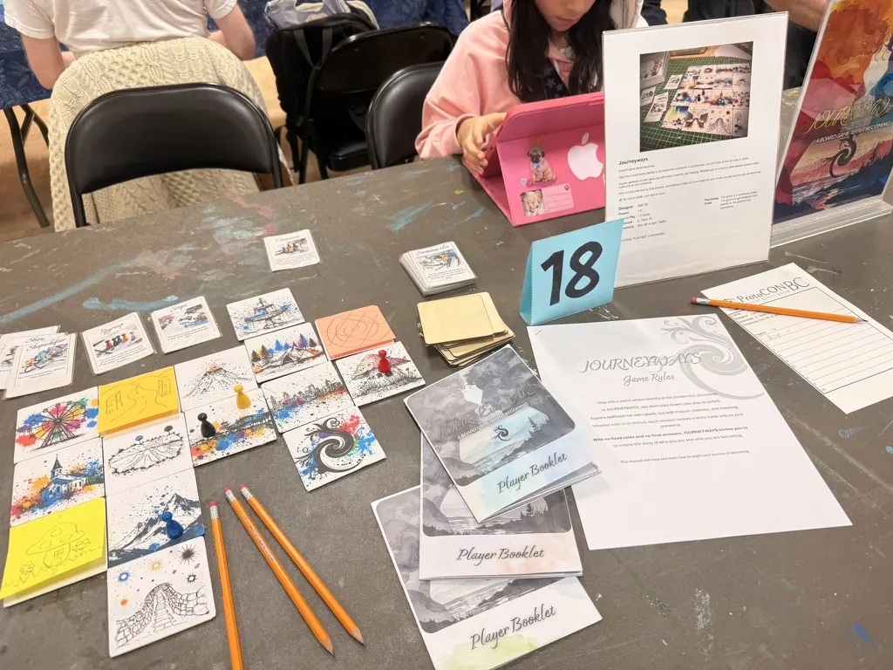
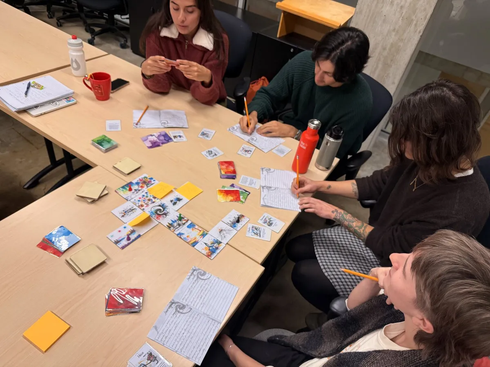

Journeyways
A game about becoming.
Narrative play as an instrument for critical ethnographic research.
Adri M. · 2026

Identity is enacted, not declared.
Traditional methods
A handful of checkboxes (transman, transwoman, ciswoman, cisman, nonbinary, other) and a semi-structured interview to fit a person inside them.
Extraction. “What are you?”
Journeyways
A safe, collaborative table. Open, multimodal expression. The continuous process of identity construction is the data, not the box that contains it.
Elaboration. “Who shows up here?”
Forms do not give identity room to enact.
What if research happened around a table, not across one?
JOURNEYWAYS is a board game and a digital game built as strict, safe research instruments. The actual research is the critical ethnographic analysis of the stories that emerge through play. The games are the form; the analysis is the work.
Grounded in arts-based research (Leavy, McDermott) and the serious-games tradition (Ritterfeld and colleagues). Inside a body of methodological work, not improvised.
“It is a game. We are just playing. Everything is safe. You can’t lose.”
Map tiles, cards, and a player booklet.

Map tiles
Wordless illustrations. Location and context, expandable and open to authorship.

Cards
Stimulus and event. Short text, public to the table, organized in five categories. Designed to elicit, not to provide.

Player booklet
Expression and archive. The durable artifact of the session. Accommodates writing, drawing, or silence.
The framework is the form. Drop one component, and the experience changes. Together, they create an engine for identity exploration.
Wordless. Open to interpretation.


- Spatial agency. Movement is an expression. Where a player chooses to go is part of the telling.
- Open authorship. Players draw on tiles or invent new ones with sticky notes when a place doesn’t yet exist.
- Rule-breaking as data. Modifying rules mid-play is a success metric.
Five colored piles, not one shuffled deck.
 RedEncounters
RedEncounters GreenMovement
GreenMovement BlueReflections
BlueReflections PurpleSocial
PurpleSocial BlackTime passing
BlackTime passingPlayers choose which pile to pick from. The specific card stays a discovery. Agency at the level of category, surprise at the level of content. Players steer the tone of their story without the game collapsing into pure choice.
Five black cards end the session. The poetic countdown.
A mirror in a cave is not a mirror in a classroom.


Cards are written as open gestures. The mechanic is the meeting of components. Image plus context produces a story; the card alone does not.
Designed to elicit, not to provide. Every prompt is hand-authored. No generative AI. Restraint is part of the design.
Expression in any modality, including silence.
Active and tangible. Writing the journal as the default durable archive. Drawing, doodling, comics.
Passive and intangible. Narrating aloud to the table. Passing a turn. Silence.
“Doing nothing is also a way of expression.”

The booklet is the ethnographic artifact that captures the character across different play sessions.
Nine principles behind every piece and every rule.
- No winning, no losing. Five black cards end the session, or simply when a story feels complete.
- Consent is the only enforced rule. Everything else is mutable.
- Identity is uncovered. No predefined roles or archetypes.
- Expression takes any form, including silence.
- Components combine for compounded meaning.
- Prompts elicit; they do not provide.
- Hand-made materials. Cardboard, wood, watercolor. Sensorial and unintimidating.
- Freely accessible. No proprietary fonts, no generative content.
- The framework is meant to be remixed.
Full essay on /design.
Two versions, peers, not a hierarchy.
The physical
Tactile. Highly drawable. Requires physical presence. Sixty to ninety minutes for a group of five or six. The grounded experience.
The digital
Web-native. Real-time multiplayer. Trilingual at launch (English, Spanish, French). Exists because physical presence shouldn’t be a barrier to participation. The access-driven variant.
Same components, same philosophy, same agency.
Built directly into the artifact.
- Audio-only documentation. No video recordings of playtests, no camera in the digital app. Privacy first.
- No auto-translation, no AI. User-created content stays exactly as written, to preserve the player’s authentic words.
- Open access. Free fonts, GPL code, Creative Commons content. Resists institutional siloing.
- Data sovereignty. Player journals hosted on Canadian servers, governed by an explicit privacy policy and terms of use.
Research-ethics decisions baked into the artifact, not bolted on after.
A four-phase arts-based methodology.
Game design. Iterative prototyping using lean mechanics and the serious-games framework.
Play-testing. Three to five facilitated sessions with diverse groups of three to six players. Audio recordings and observation.
Data collection. Participant observation paired with semi-structured interviews. Narrative aspects of gameplay are the data.
Analysis. Thematic analysis identifying recurring patterns and themes within player stories.
Players are testers right now, not subjects. Ethics review and formal protocol enter at phase two. The formal ethnographic phase runs through 2028.
Beyond gender, in actual play.
While gender theory (Butler, Serano, Stryker) is the default anchor, the open framework has elicited stories about parenthood, the international student experience, migrant identity, and a younger self.
The “Water” identity. A player chose their character to be Water. Not water-based, not anthropomorphized. Simply Water. As a way to think about feeling less flowy than they used to be.

The space warp. Another player broke the adjacency rule, placed a space-themed tile separately, and authored warp rules to connect it. The break became the best part of that session.
“The more the players create new rules, the better the game goes.”
Journeyways as a continuous framework.
The three-component engine (map tiles + cards + booklet) is a framework anyone can author variants on. Researchers, classrooms, support groups, community organizers.
Migrant identity
A variant in early planning, by the project’s designer.
Children’s version
Requested by educators. Lighter prompts; same engine.
Two-tier governance
The framework stays open. The community library will be curated. Resists both enclosure and dilution.
2026 to 2028 · alpha → ethics review → formal protocol → ethnographic analysis
“The stories are the most important, no matter how the players tell them.”
Thank you.